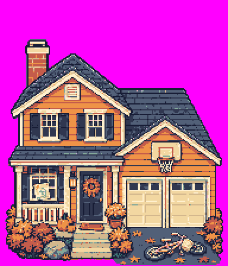
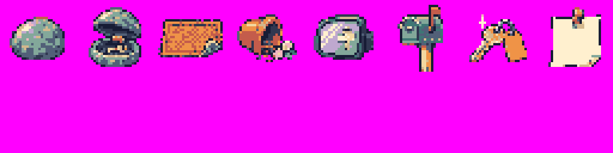
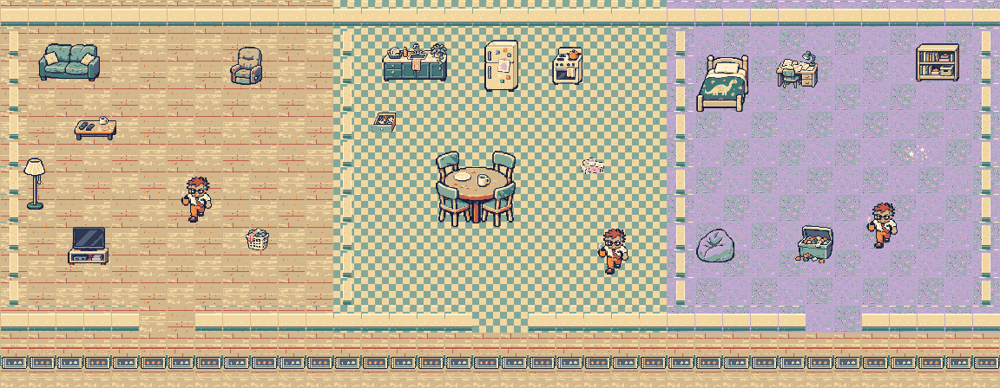
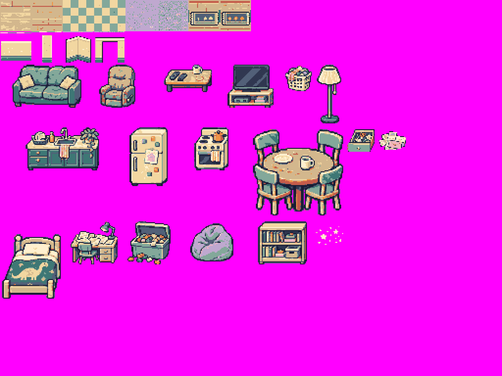
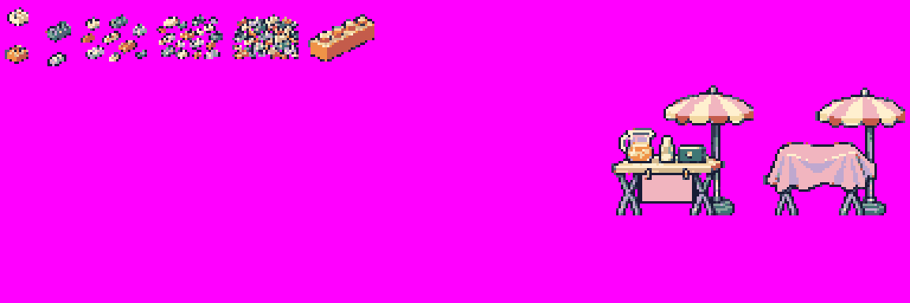

November9 local art drafts. No game changes or push.
Closed and open. Only649doorway pixels change; the rest of the building is identical.

Eight32px props in the top row. Bottom half intentionally empty.

Living room, kitchen, kid’s room. Existing heroes show scale. Art mock-up only; no gameplay map changes.

Native512×384atlas · Named rectangle map

Four scatter densities, one ouch brick, open and closed stands. The unused atlas space remains magenta.
